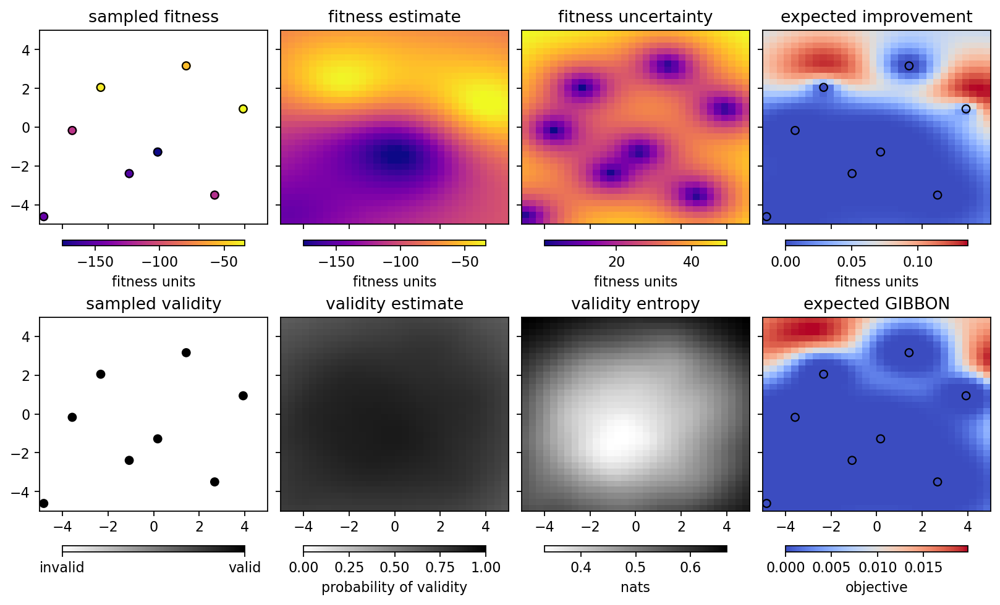

Running the optimizer with Himmelblau’s function¶
[1]:
%run -i ../../../examples/prepare_bluesky.py
import bloptools
from bloptools.experiments.tests import Himmelblau
himmelblau = Himmelblau()
[2]:
boa = bloptools.bo.BayesianOptimizationAgent(
dofs=himmelblau.dofs,
dets=[],
bounds=himmelblau.bounds,
db=db,
experiment=himmelblau,
)
RE(boa.initialize(init_scheme='quasi-random', n_init=8))
learning with strategy "quasi-random" ...
Transient Scan ID: 1 Time: 2023-04-25 18:16:34
Persistent Unique Scan ID: '31534122-1306-46d3-8a82-595e452038ee'
New stream: 'primary'
+-----------+------------+------------+------------+
| seq_num | time | x1 | x2 |
+-----------+------------+------------+------------+
| 1 | 18:16:34.3 | 0.176 | -1.281 |
| 2 | 18:16:34.4 | -1.074 | -2.392 |
| 3 | 18:16:34.4 | 2.676 | -3.503 |
| 4 | 18:16:34.4 | 3.926 | 0.941 |
| 5 | 18:16:34.4 | 1.426 | 3.164 |
| 6 | 18:16:34.4 | -2.324 | 2.052 |
| 7 | 18:16:34.4 | -3.574 | -0.170 |
| 8 | 18:16:34.4 | -4.824 | -4.614 |
+-----------+------------+------------+------------+
generator list_scan ['31534122'] (scan num: 1)
x1 x2 fitness
0 0.176367 -1.280899 -176.920226
1 -1.073633 -2.392010 -155.332517
2 2.676367 -3.503121 -117.052540
3 3.926367 0.941323 -33.490055
4 1.426367 3.163546 -53.326221
5 -2.323633 2.052435 -38.714193
6 -3.573633 -0.169788 -113.756347
7 -4.823633 -4.614232 -148.205228
[2]:
('31534122-1306-46d3-8a82-595e452038ee',)
We initialized the GP with the “quasi-random” strategy, as it doesn’t require any prior data. We can view the state of the optimizer:
[3]:
boa.plot_state(gridded=True)

Now let’s try the “EI” strategy to sample where we expect the largest improvement in the fitness:
[4]:
RE(boa.learn(strategy='eI', n_iter=1, n_per_iter=4))
boa.plot_state(gridded=True)
learning with strategy "eI" ...
Transient Scan ID: 2 Time: 2023-04-25 18:16:41
Persistent Unique Scan ID: 'f6f0cdbd-62ad-4dbf-ae1d-f6211520ff66'
New stream: 'primary'
+-----------+------------+------------+------------+
| seq_num | time | x1 | x2 |
+-----------+------------+------------+------------+
| 1 | 18:16:41.6 | 4.961 | -0.770 |
| 2 | 18:16:41.6 | 4.521 | 1.973 |
| 3 | 18:16:41.6 | 3.213 | 1.345 |
| 4 | 18:16:41.6 | -1.813 | 4.085 |
+-----------+------------+------------+------------+
generator list_scan ['f6f0cdbd'] (scan num: 2)
x1 x2 fitness
8 4.960759 -0.769839 -166.939936
9 4.520892 1.973478 -132.236059
10 3.212791 1.345443 -4.354008
11 -1.812633 4.084749 -75.150947

Let’s learn a bit more, using the “GIBBON” framework to investigate points that are likely to tell us about the optimum. Running two iterations with four points per iteration:
[5]:
RE(boa.learn(strategy='eGIBBON', n_iter=4, n_per_iter=4))
boa.plot_state(gridded=True)
learning with strategy "eGIBBON" ...
Transient Scan ID: 3 Time: 2023-04-25 18:16:48
Persistent Unique Scan ID: '6f8ca64d-96e1-4828-b003-46a132889d22'
New stream: 'primary'
+-----------+------------+------------+------------+
| seq_num | time | x1 | x2 |
+-----------+------------+------------+------------+
| 1 | 18:16:48.9 | -4.903 | 3.542 |
| 2 | 18:16:48.9 | 2.588 | 5.000 |
| 3 | 18:16:48.9 | 2.598 | 1.790 |
| 4 | 18:16:48.9 | 2.752 | 1.073 |
+-----------+------------+------------+------------+
generator list_scan ['6f8ca64d'] (scan num: 3)
x1 x2 fitness
12 -4.903445 3.542224 -275.509950
13 2.587841 4.999842 -424.279565
14 2.598305 1.790386 -7.474786
15 2.751975 1.073415 -15.121662
Transient Scan ID: 4 Time: 2023-04-25 18:16:52
Persistent Unique Scan ID: 'bc5cd6c4-e8de-4735-bce3-144ed130b262'
New stream: 'primary'
+-----------+------------+------------+------------+
| seq_num | time | x1 | x2 |
+-----------+------------+------------+------------+
| 1 | 18:16:52.5 | 1.601 | 1.947 |
| 2 | 18:16:52.5 | -0.082 | 1.990 |
| 3 | 18:16:52.5 | 0.359 | -4.924 |
| 4 | 18:16:52.5 | 4.991 | -4.612 |
+-----------+------------+------------+------------+
generator list_scan ['bc5cd6c4'] (scan num: 4)
x1 x2 fitness
16 1.601004 1.947361 -44.694400
17 -0.081690 1.989935 -90.807021
18 0.358592 -4.923510 -559.223326
19 4.990624 -4.611892 -457.340695
Transient Scan ID: 5 Time: 2023-04-25 18:16:56
Persistent Unique Scan ID: '1a150780-449d-4202-a174-e194aa4f34d5'
New stream: 'primary'
+-----------+------------+------------+------------+
| seq_num | time | x1 | x2 |
+-----------+------------+------------+------------+
| 1 | 18:16:56.0 | 2.855 | -1.325 |
| 2 | 18:16:56.0 | 2.886 | 1.648 |
| 3 | 18:16:56.0 | -1.640 | 0.088 |
| 4 | 18:16:56.0 | -4.791 | -1.944 |
+-----------+------------+------------+------------+
generator list_scan ['1a150780'] (scan num: 5)
x1 x2 fitness
20 2.854590 -1.325008 -23.152666
21 2.885845 1.647940 -3.004152
22 -1.640213 0.087552 -142.124613
23 -4.791198 -1.943717 -164.448055
Transient Scan ID: 6 Time: 2023-04-25 18:16:59
Persistent Unique Scan ID: '4d349f8b-24d1-4fb2-9c4b-6206f6be8b5c'
New stream: 'primary'
+-----------+------------+------------+------------+
| seq_num | time | x1 | x2 |
+-----------+------------+------------+------------+
| 1 | 18:16:59.6 | 2.207 | -2.149 |
| 2 | 18:16:59.6 | 3.314 | -1.825 |
| 3 | 18:16:59.6 | 3.019 | -0.138 |
| 4 | 18:16:59.6 | -1.488 | 2.748 |
+-----------+------------+------------+------------+
generator list_scan ['4d349f8b'] (scan num: 6)
x1 x2 fitness
24 2.207357 -2.149272 -68.536244
25 3.314046 -1.825348 -3.519970
26 3.018732 -0.137578 -19.800107
27 -1.488413 2.747646 -37.326585

Eventually, we reach a point of saturation where no more improvement takes place:
[6]:
RE(boa.learn(strategy='eGIBBON', n_iter=8, n_per_iter=4))
boa.plot_state(gridded=True)
learning with strategy "eGIBBON" ...
Transient Scan ID: 7 Time: 2023-04-25 18:17:07
Persistent Unique Scan ID: '1ca14044-1b26-43c5-b305-68ea8d362403'
New stream: 'primary'
+-----------+------------+------------+------------+
| seq_num | time | x1 | x2 |
+-----------+------------+------------+------------+
| 1 | 18:17:07.0 | -0.228 | 3.724 |
| 2 | 18:17:07.0 | -2.518 | 3.077 |
| 3 | 18:17:07.0 | -4.932 | 1.340 |
| 4 | 18:17:07.0 | 3.138 | -2.091 |
+-----------+------------+------------+------------+
generator list_scan ['1ca14044'] (scan num: 7)
x1 x2 fitness
28 -0.228384 3.724479 -96.311148
29 -2.518185 3.077236 -2.503543
30 -4.931554 1.340466 -317.648180
31 3.137606 -2.091263 -10.802104
Transient Scan ID: 8 Time: 2023-04-25 18:17:10
Persistent Unique Scan ID: '90439e91-a7d0-419f-af9d-61d0249a2e8d'
New stream: 'primary'
+-----------+------------+------------+------------+
| seq_num | time | x1 | x2 |
+-----------+------------+------------+------------+
| 1 | 18:17:10.8 | 3.514 | -1.030 |
| 2 | 18:17:10.8 | 3.314 | 0.614 |
| 3 | 18:17:10.8 | 2.202 | -0.015 |
| 4 | 18:17:10.8 | -2.180 | 2.859 |
+-----------+------------+------------+------------+
generator list_scan ['90439e91'] (scan num: 8)
x1 x2 fitness
32 3.514480 -1.030441 -5.977497
33 3.314213 0.613756 -11.307402
34 2.202155 -0.015163 -61.032701
35 -2.179672 2.859198 -12.500309
Transient Scan ID: 9 Time: 2023-04-25 18:17:14
Persistent Unique Scan ID: 'dc0c51c6-a4e6-4553-8bc7-574ad6d50564'
New stream: 'primary'
+-----------+------------+------------+------------+
| seq_num | time | x1 | x2 |
+-----------+------------+------------+------------+
| 1 | 18:17:14.5 | -3.422 | 4.982 |
| 2 | 18:17:14.5 | 2.967 | 2.549 |
| 3 | 18:17:14.5 | 3.543 | -0.342 |
| 4 | 18:17:14.5 | -2.934 | -1.901 |
+-----------+------------+------------+------------+
generator list_scan ['dc0c51c6'] (scan num: 9)
x1 x2 fitness
36 -3.422456 4.982104 -239.764920
37 2.966508 2.549267 -6.199649
38 3.543129 -0.342269 -12.621465
39 -2.933780 -1.901336 -58.366733
Transient Scan ID: 10 Time: 2023-04-25 18:17:18
Persistent Unique Scan ID: 'bc961169-2b2a-4a1f-8e75-769d55815783'
New stream: 'primary'
+-----------+------------+------------+------------+
| seq_num | time | x1 | x2 |
+-----------+------------+------------+------------+
| 1 | 18:17:18.2 | -3.087 | -3.404 |
| 2 | 18:17:18.2 | -2.128 | -1.370 |
| 3 | 18:17:18.2 | 2.745 | 2.278 |
| 4 | 18:17:18.2 | 3.309 | 2.119 |
+-----------+------------+------------+------------+
generator list_scan ['bc961169'] (scan num: 10)
x1 x2 fitness
40 -3.086667 -3.404467 -26.045839
41 -2.128179 -1.370130 -114.056943
42 2.744528 2.278231 -2.288494
43 3.308825 2.118972 -4.911891
Transient Scan ID: 11 Time: 2023-04-25 18:17:22
Persistent Unique Scan ID: '1d7b1068-5e9d-4952-bd0d-6e1937014a18'
New stream: 'primary'
+-----------+------------+------------+------------+
| seq_num | time | x1 | x2 |
+-----------+------------+------------+------------+
| 1 | 18:17:22.1 | 3.001 | 1.939 |
| 2 | 18:17:22.1 | -2.501 | -2.802 |
| 3 | 18:17:22.1 | -3.821 | -3.053 |
| 4 | 18:17:22.1 | -3.288 | -4.974 |
+-----------+------------+------------+------------+
generator list_scan ['1d7b1068'] (scan num: 11)
x1 x2 fitness
44 3.001040 1.939207 -0.059827
45 -2.501227 -2.801626 -59.663895
46 -3.820532 -3.052948 -2.545535
47 -3.287641 -4.974264 -235.650338
Transient Scan ID: 12 Time: 2023-04-25 18:17:26
Persistent Unique Scan ID: 'a03fbec9-c5b8-4bce-9635-35f7757e6a1c'
New stream: 'primary'
+-----------+------------+------------+------------+
| seq_num | time | x1 | x2 |
+-----------+------------+------------+------------+
| 1 | 18:17:26.1 | -4.057 | -3.542 |
| 2 | 18:17:26.1 | -3.302 | -2.815 |
| 3 | 18:17:26.1 | -2.889 | 2.612 |
| 4 | 18:17:26.1 | 2.045 | 2.522 |
+-----------+------------+------------+------------+
generator list_scan ['a03fbec9'] (scan num: 12)
x1 x2 fitness
48 -4.056986 -3.542247 -5.896129
49 -3.301993 -2.814804 -14.136704
50 -2.889234 2.612373 -9.394242
51 2.044677 2.522115 -20.441875
Transient Scan ID: 13 Time: 2023-04-25 18:17:30
Persistent Unique Scan ID: 'b59e6656-cab8-4e7d-8516-e56304e5b5cc'
New stream: 'primary'
+-----------+------------+------------+------------+
| seq_num | time | x1 | x2 |
+-----------+------------+------------+------------+
| 1 | 18:17:30.0 | 2.922 | 2.109 |
| 2 | 18:17:30.0 | 4.947 | 3.988 |
| 3 | 18:17:30.0 | -2.672 | 2.827 |
| 4 | 18:17:30.0 | -3.710 | -3.470 |
+-----------+------------+------------+------------+
generator list_scan ['b59e6656'] (scan num: 13)
x1 x2 fitness
52 2.921836 2.109264 -0.262557
53 4.946543 3.987505 -496.436758
54 -2.671619 2.827489 -3.883233
55 -3.709589 -3.469725 -2.269533
Transient Scan ID: 14 Time: 2023-04-25 18:17:34
Persistent Unique Scan ID: '5f06b1e4-e5c6-480c-ab0d-dfeef898c745'
New stream: 'primary'
+-----------+------------+------------+------------+
| seq_num | time | x1 | x2 |
+-----------+------------+------------+------------+
| 1 | 18:17:34.1 | -4.804 | -3.375 |
| 2 | 18:17:34.1 | -3.770 | -3.220 |
| 3 | 18:17:34.1 | 3.621 | -1.510 |
| 4 | 18:17:34.1 | 3.256 | -0.853 |
+-----------+------------+------------+------------+
generator list_scan ['5f06b1e4'] (scan num: 14)
x1 x2 fitness
56 -4.803946 -3.374528 -75.922143
57 -3.770289 -3.220399 -0.159484
58 3.621078 -1.509976 -1.570247
59 3.255691 -0.853438 -10.668271